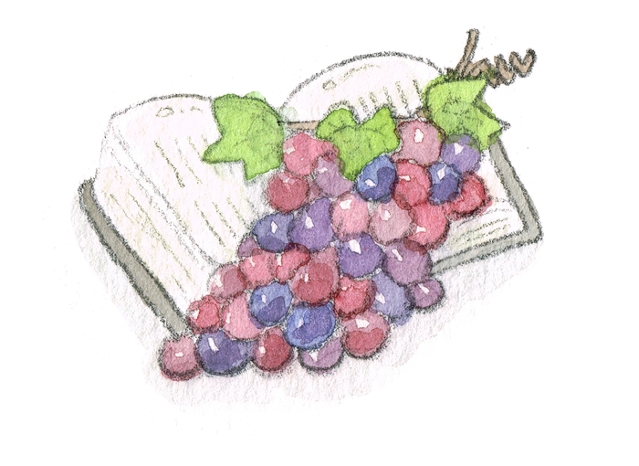
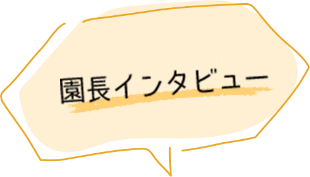

-
2022.9.1
入園案内 -
2022.9.1
園庭開放9月2日(金)・9日(金)・14日(水)・28日(水)
9月 Angel(園庭開放) AngelBaby(赤ちゃん教室)のお知らせ
聖三一幼稚園の子どもたちはとにかく元気いっぱい！どんな時も、子どもたちの明るい声が園舎内に響いています。小さな園だからこそ縦のつながりも大切にし、思いやりの心を育みます。先生たちは子どもたちの日々の成長を感じながら、心を込めて環境を整えます。100年以上続く歴史を大切にしながら、新園舎で今日も楽しく過ごします！
保育理念
わたしはぶどうの木、あなたがたはその枝である
新約聖書ヨハネによる福音書１５章５節

聖三一幼稚園では、キリスト教の精神を基盤に「一人ひとりが愛されている思いを十分に感じる保育」を最も大切にしています。
この保育は一人ひとりの内に「自己肯定感」をしっかりと育み、子ども達がこれからの人生を生きていく上で最も大切な力となります。
豊かに愛される思いに満たされ、人と自然を愛する幸せな人に成長できることを願っています。家庭と社会と一緒に歩み、世界の平和を担える人に成長できる事を目指しています。

(国)登録有形文化財(26-0049)・京都市景観重要建造物の「礼拝堂」、京都市指定保存樹の「二本のイチョウの木」、大型デッキのある「園庭」、そして園舎。長い歴史とたくさんの技術がつまった子ども達のための幼稚園です。
今月の園庭開放イベント

スライム
9月2日(金)10:00～11:30
ベタベタぷよぷよ不思議な感覚の
「スライム作り」をしましょう♪

給食試食会
9月9(金)11:30～12:30
幼稚園で給食室の栄養士さん達が作ってくださる
美味しい給食を一緒にたべませんか？

幼稚園は絵本屋さん
9/14(水)10:00～11:30
幼稚園に絵本自動車がやってきます。お母さんと一緒に、お気に入りの１冊みつかるかな？

Angel baby 亀ちゃん先生
9/28(水)10:00～11:30
亀ちゃん先生と童歌遊びで楽しみましょう♪
お家でもまねしてみてね!!
園庭開放のお申込みはこちらから！
来月以降のイベントスケジュールもご確認いただけます。
園の様子やイベント情報を
Instagramで発信中
聖三一幼稚園の日常の一コマをお届けします。
未就園児さん向けの楽しいイベント（園庭開放:Angel／AngelBaby）もお知らせもいたします！
募集案内開始のご連絡など、入園検討中の保護者様へ大切なご案内なども発信しますので、是非フォロー＆チェックしてくださいね！